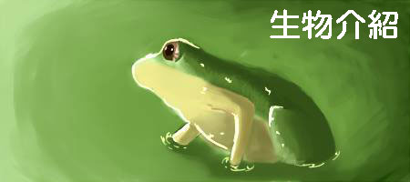

蝴蝶
蝴蝶（Butterfly）是錘角亞目中的物種的總稱，或稱蝶、蜨、蛺（現指蝴蝶中的一類）。以美麗的色彩和優美的飛舞姿態著稱。與蛾一同為昆蟲綱鱗翅目之下的一個家族，與其他昆蟲不同的是身上長有大而耀眼的翅膀。蝴蝶翅膀一般色彩鮮豔，有各種花斑，是由翅膀上的鱗片組成。蝴蝶主要在日間活動，休息時四翅合攏豎立在背上，或完全展開平放，弄蝶科蝴蝶又有另類的休息形態。蝴蝶頭部有一對棒狀或錘狀觸角，這是與蛾類的主要區別（蛾的觸角形狀多樣）。全世界大約有28,000種蝴蝶[1]，在世界各地除了南極洲等寒冷地帶以外都有分布，在南美洲亞馬遜河流域品種最多。
世上最大的蝴蝶——亞歷山大鳥翼鳳蝶展翅可達280毫米，最小褐小灰蝶（Brephidium exilis）只有1.6厘米[1]。有許多蝴蝶的幼蟲以農作物為食物，被視為害蟲。
青蛙
無尾目（學名：Anura）是屬於兩棲綱的動物，成體基本無尾，卵一般產於水中，孵化成蝌蚪，用腮呼吸，經過變態，成體主要用肺呼吸，但多數皮膚也有部分呼吸功能。主要包括兩類動物：蛙和蟾蜍。這兩類動物沒有太嚴格的區別，有的一科中同時包括兩種。一般來說，蟾蜍多在陸地生活，因此皮膚多粗糙；蛙體形較苗條，多善於游泳。兩種體形相似，頸部不明顯，無肋骨。前肢的尺骨與橈骨癒合，後肢的脛骨與腓骨癒合，因此爪不能靈活轉動，但四肢肌肉發達。
無尾目是生物從水中走上陸地的第一步，比其他兩棲綱生物要先進，雖然多數已經可以離開水生活，但繁殖仍然離不開水，卵需要在水中經過變態才能成長。因此不如爬行綱動物先進，爬行綱動物已經可以完全離開水生活。
蛾
蛾是一種與蝴蝶有親近關係的昆蟲的總稱，兩者均屬於鱗翅目，靜止時多數將翅膀攤開在身體兩側，且主要於夜間活動。
資料來源為維基百科
蝴蝶
無尾目
蛾